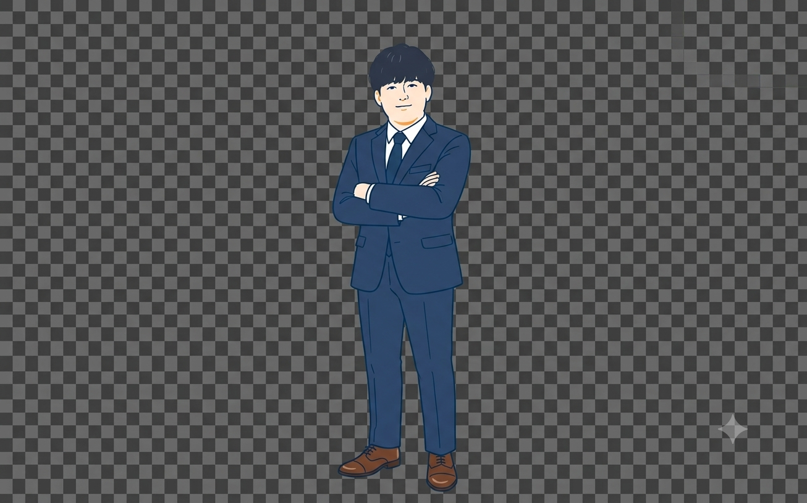

01
SPEED
圧倒的な機動力
若さは、スピードです。代表自らが窓口となり、お問い合わせには原則24時間以内に返信。岡山市内であれば翌日の訪問も可能です。「担当者が変わった」「返事が来ない」といったストレスとは無縁の、フットワークの軽さがTeeenSの最大の強みです。
株式会社TeeenSは、代表・新田拓夢のもと、岡山市から次世代のWeb制作を発信するスタジオです。最新AIとSTUDIOの強みを活かし、納品後も常にお客様のビジネスに寄り添って進化し続ける「生きたWebサイト」を制作。単なる制作会社を超えて、貴社の頼れるWeb部門として共に歩みます。
無料相談 →「初期費用が高すぎた」「更新を頼んだら時間も費用もかかった」「結局、誰も見ていないページになっている」——多くの企業が同じ不満を抱えています。
TeeenSはこの構造そのものを変えたいと考えています。高額な制作費・遅い対応・硬直した運用体制は、技術の使い方と向き合い方次第で解決できます。
すべての企業がデジタルの力を正しく活用できる社会へ。TeeenSは岡山からその実現に向けて動き続けます。
岡山には素晴らしい技術を持つ職人さん、地域に根ざして何十年も続く会社、真剣に仕事と向き合う経営者の方がたくさんいます。
そういった方々が、デジタルの発信が弱いというだけで本来届くべき人に届いていない。そのもったいなさを解消することが、TeeenSが存在する理由です。
若さは、スピードです。代表自らが窓口となり、お問い合わせには原則24時間以内に返信。岡山市内であれば翌日の訪問も可能です。「担当者が変わった」「返事が来ない」といったストレスとは無縁の、フットワークの軽さがTeeenSの最大の強みです。
Webへの投資は、会社のフェーズによって最適な形が変わります。初期費用0円で始められる月額制「サブスクリプションプラン」と、サイトを自社資産として保有する「買い切りプラン」の2種類を用意。状況に合わせて最善の選択肢をご提案します。
公開はゴールではなく、スタートです。TeeenSは納品後もお客様の「専属Web部門」として機能し続けます。AIや最新ツールを活用した改善提案、アクセス解析、機能追加対応まで——変化するビジネスに合わせてWebをアップデートし続けます。

株式会社TeeenS代表の新田拓夢です。私は17歳で当社を設立いたしました。
私たちの強みは、最新のWeb技術（AI・ノーコード）に対する圧倒的な適応力と、10代ならではの機動力です。変化の激しいデジタルの世界において、過去の経験以上に「今、最前線の技術を扱えているか」が重要だと考えています。
素晴らしい事業を展開しているにもかかわらず、デジタルの活用にハードルを感じている岡山の企業様へ、私たちは最適なWeb運用をご提案します。
岡山市内であれば、フットワーク軽くいつでも対面でお打ち合わせに伺います。複雑なITの言葉は使わず、丁寧にお話を伺いながら、貴社に本当に必要な「生きたWebサイト」を共につくり上げます。まずはお気軽な情報収集からでも、いつでもお声がけください。
株式会社TeeenS 代表取締役 新田 拓夢
| 会社名 | 株式会社TeeenS |
|---|---|
| 代表取締役 | 新田 拓夢 |
| 創業 | 2026年 |
| 所在地 | 岡山県岡山市中区浜3丁目4-39 |
| 資本金 | 138万円 |
| 事業内容 | Webサイト制作 / LP制作 / 社内Webアプリ開発 / AI活用支援 |
| 対応エリア | 岡山県全域（対面）/ 全国（オンライン） |
| 初回相談 | 無料 |